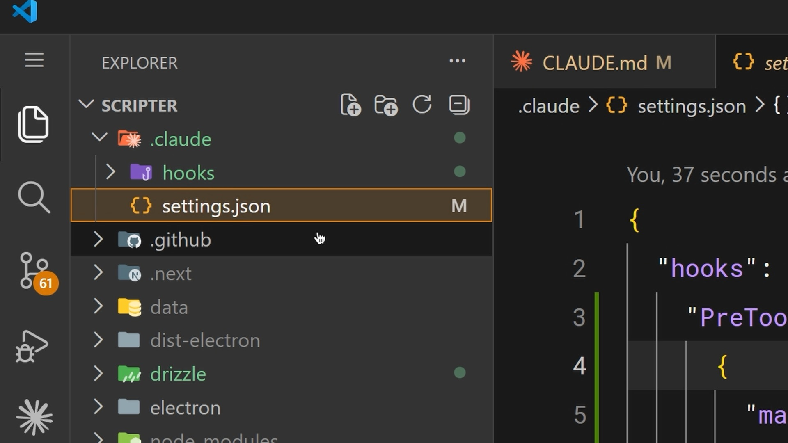
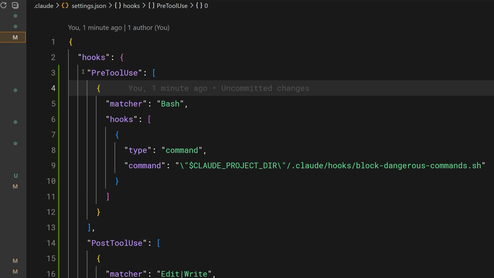

Hooks
Чему научитесь
Видео 3:21 и текст урока
К концу урока вы сможете:
- объяснить, чем hook отличается от указания в
CLAUDE.mdи для каких задач он нужен; - настроить hook в
settings.json— событие, matcher и команду — на примере автоформатирования после правок; - блокировать опасные действия в PreToolUse кодом выхода 2;
- поделиться hooks с командой через
.claude/settings.jsonи переменнуюCLAUDE_PROJECT_DIR.
Видео и текст урока.
Hooks позволяют запускать команды в определённые моменты жизненного цикла Claude Code. Главное отличие hooks от всего остального, о чём шла речь в этом курсе, в том, что hooks детерминированы — они выполняются всегда.
Зачем нужны hooks
В файле CLAUDE.md можно попросить Claude запускать Prettier после каждой правки файла. Чаще всего он так и сделает. Но иногда — нет. Hook гарантирует, что это произойдёт каждый раз, без исключений.
Типичные применения:
- автоформатирование после правки файлов;
- запись всех выполненных команд в журнал ради соответствия требованиям (compliance);
- блокировка опасных операций, например изменения файлов продакшена;
- уведомления самому себе, когда Claude заканчивает задачу.
Как работают hooks
Hooks настраивают в файле settings.json. Вы выбираете событие, при желании задаёте matcher — к каким инструментам относится hook — и указываете команду, которую нужно выполнить. Вот некоторые из самых распространённых событий:
- PreToolUse — срабатывает перед вызовом инструмента;
- PostToolUse — срабатывает после того, как вызов инструмента завершился;
- UserPromptSubmit — срабатывает, когда вы отправляете промпт, до того как Claude начнёт его обрабатывать;
- Stop — срабатывает, когда Claude заканчивает ответ;
- Notification — срабатывает, когда Claude отправляет уведомление.
Это лишь несколько событий, к которым можно подключить hook, — Claude Code поддерживает гораздо больше. Полный список — в справочнике по hooks.
Настраивают hooks, редактируя settings.json напрямую. Команда /hooks внутри Claude Code открывает список настроенных hooks в режиме только для чтения: по нему можно проверить, что новый hook появился.

.claude/settings.json с настройкой hooks.Практический пример
Самый распространённый hook — автоформатирование после правок. Задайте hook PostToolUse с matcher "Edit|Write", чтобы он срабатывал после того, как Claude воспользуется инструментом Edit или Write. Команда запускает тот форматтер, который принят в вашем проекте. Для Prettier добавьте в .claude/settings.json вот это (понадобится jq):
{
"hooks": {
"PostToolUse": [
{
"matcher": "Edit|Write",
"hooks": [
{
"type": "command",
"command": "file=$(jq -r '.tool_input.file_path') && npx prettier --write -- \"$file\""
}
]
}
]
}
}
Чтобы проверить hook, попросите Claude отредактировать какой-нибудь файл и убедитесь, что файл переформатирован.
Блокировка через PreToolUse
Hooks PreToolUse могут блокировать вызовы инструментов до того, как те выполнятся. Hook получает имя инструмента и его входные данные в виде JSON через stdin. Что будет дальше, решает код выхода:
- Код выхода 0 — работа идёт как обычно.
- Код выхода 2 — действие блокируется. Сообщение из stderr передаётся Claude как обратная связь: так он узнаёт, почему его остановили, и может скорректировать свои действия.
- Любой другой код выхода — неблокирующая ошибка: её покажут вам, но ничего не остановится.
Так и обеспечивают соблюдение жёстких правил. Запретите запись в каталог с конфигурацией продакшена. Запретите bash-команды, в которых есть rm -rf. Запретите коммиты в main. Всё, что для вашей команды должно быть гарантировано, а не просто рекомендовано.

Edit|Write.Как поделиться hooks с командой
Hooks, настроенные в .claude/settings.json, действуют на уровне проекта, и этот файл можно закоммитить в репозиторий. Тогда вся команда автоматически получит одни и те же hooks. Чтобы сослаться в командах на скрипты, которые лежат в проекте, используйте переменную окружения CLAUDE_PROJECT_DIR: так команды будут работать, каким бы ни был текущий рабочий каталог Claude.
Итог
Hooks дают детерминированный контроль над поведением Claude Code. PostToolUse используйте для автоформатирования и журналирования. PreToolUse — чтобы блокировать опасные операции. Настраивайте hooks в settings.json, а просматривайте командой /hooks. И коммитьте их в репозиторий, чтобы они были и у команды.
Если что-то должно происходить каждый раз, без сбоев, не пишите это в промпт. Сделайте для этого hook.
Дальше
Курс пройден. Официальный тест курса — Course quiz — проходится на Academy (нужен вход в аккаунт). Проверить себя можно и нашим пробным экзаменом по всему курсу.
Оригинал урока: Hooks.